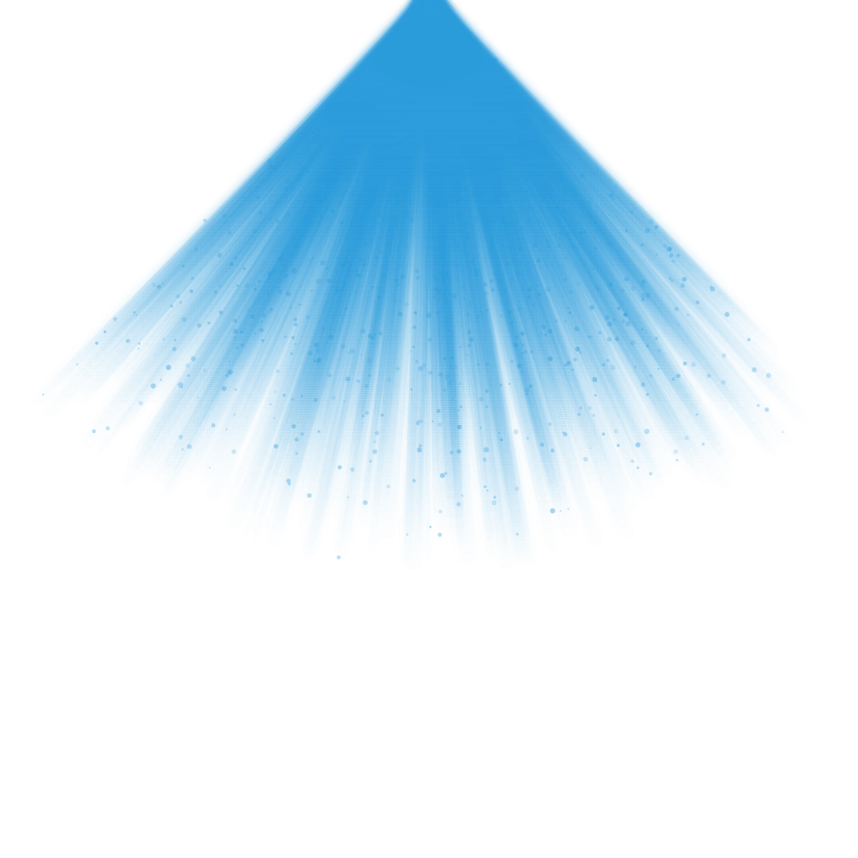
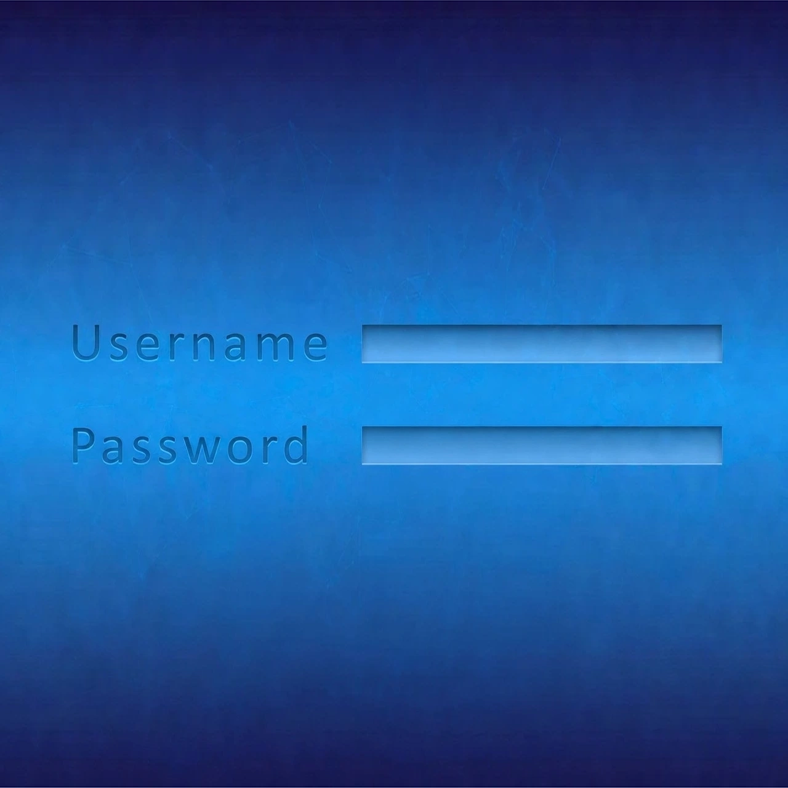
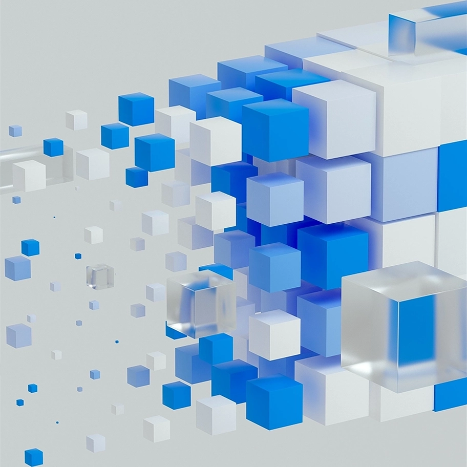

Forged out of Frustration.
Freely shared with the world.
Walter Creations is one person's attempt to solve simple but frustrating issues in the design and creator world.
Our Story
In 2025, a graphic designer needed a transparent image of light from the heavens for a personal design. However, much to his dismay, there was nothing available that wasn't watermarked or not good enough. Frustrated, he turned to code and made the very first version of the Sun Ray Generator.
Later on in his project, he needed a cobbled stone texture, once again, there was nothing fitting the bill, so once again he turned to code and the first Stone Texture Generator was born. Soon, he realized that code could potentially solve many similar problems like this he had faced or might face in the future, and with that realization, he sought to create more simple and lightweight programs and to share them absolutely free.

Sun Rays
Why Free Matters
Waltercreations is free and will always be free. No signup, no login, no attribution required, and you own what you make. There are too many sites with ads, paywalls, and forced signups. Nobody wants to give a website their credit card info for a free trial of something that might not even do the job properly.
Here at Waltercreations, we value freedom, creativity, and accessibility. Whether you're a hobbyist, student, or professional, all of our tools are free to use. We are here to empower you!

Login Free
A Legion of Tools.
Waltercreations doesn't just create tools that are free to use, it also hosts a curated library of other various web tools online for its users to discover and use. By exhibiting other sites, we aim to provide our users with the tools they may need to save time, reduce frustration, and streamline creativity.
See What's Here Now →
Tool Library
What we stand for
Creative Empowerment
We make tools and try to solve problems because we love creating and want to empower others to as well.
Always Free
Every tool made by Walter Creations is free to use. No logins, no signups, no tricks.
User Owned Content
Everything you create and generate you own the rights to. We claim no ownership over assets created or made by our software.
Awareness & Accessibility
Other external tools are specially curated so we can spread awareness of fast and lightweight unique creative tools.